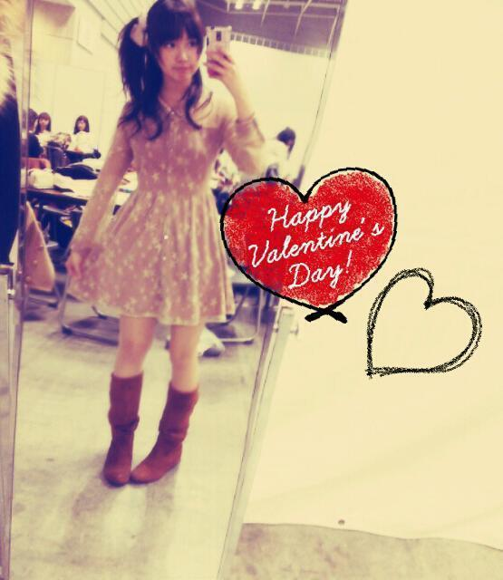
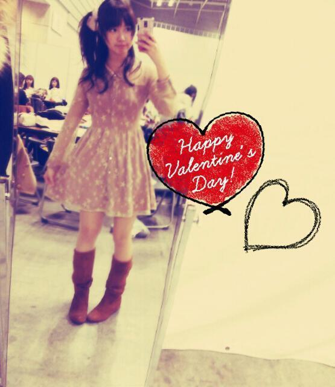
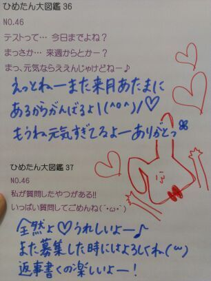

| 2013/02 16 Sat | ひめたん(*>ω<*)そ の262 |
はっぴーバレンタインー∩^ω^∩
バレンタインはレッスンだったので
メンバーみんなと過ごしましたー
いろいろ作ったんだよー♪

あんのーあれですね。
写めじゃちょっとわかりにくい、と。
ええそうだろうと思ってたんですよ。
ジャッキーちゃんのお菓子
型チョコ、クッキー、
パンケーキ大・小サイズ...
あのーそうです知っての通りみなさん
全部簡単なのね(*/ω\*)
溶かして流して固めるとか
混ぜて焼くとかそーゆーことですねー
はい。機会があればもっと高度なものにも
挑戦しようかなと思ったり思ってなかったり
そして今日は個別握手会でしたっ！
楽しかったーもう盛大に高まりましたー
来てくれた方ありがとう∩^ω^∩
今日寒いから風邪とか引かんかったかな？
乃木どこみたよーとか、東スポみたよーとか
ライブ・5th発売楽しみだよーとか
ひめたんからチョコはー？とかいろいろねー
あっ東スポ...
広島の方は18日発売の九スポに
載っているそうなのでお願いしまっす！
5thは楽しみにしとってねー(^^)
ライブも頑張るからねー＊
チョコは...あのー...
街のいろんな所に置いてきたから
探してみてくださーいーふへっ
私服ー♪

ちなみに待ち時間は
いくちゃん(生田絵梨花chan)と
あしゅ(齋藤飛鳥chan)と
バレンタイン がテーマのちょっとした茶番を
繰り広げておりましたとさー
てゆか！
「さい」って打ったら変換候補に
「齋藤飛鳥」って出てきたぞ！
どうだあしゅ(｀・ω・´)ふんだ
あしゅしゅはこの前ひめたんの記事を読んで
mailくれたからね。内容はヒミツだけどねー
まあもったいぶることでもないような気も
せんでもないけどねー
あえて伏せておくことにしますねー♪
バレンタインはレッスンだったので
メンバーみんなと過ごしましたー
いろいろ作ったんだよー♪
あんのーあれですね。
写めじゃちょっとわかりにくい、と。
ええそうだろうと思ってたんですよ。
ジャッキーちゃんのお菓子
型チョコ、クッキー、
パンケーキ大・小サイズ...
あのーそうです知っての通りみなさん
全部簡単なのね(*/ω\*)
溶かして流して固めるとか
混ぜて焼くとかそーゆーことですねー
はい。機会があればもっと高度なものにも
挑戦しようかなと思ったり思ってなかったり
そして今日は個別握手会でしたっ！
楽しかったーもう盛大に高まりましたー
来てくれた方ありがとう∩^ω^∩
今日寒いから風邪とか引かんかったかな？
乃木どこみたよーとか、東スポみたよーとか
ライブ・5th発売楽しみだよーとか
ひめたんからチョコはー？とかいろいろねー
あっ東スポ...
広島の方は18日発売の九スポに
載っているそうなのでお願いしまっす！
5thは楽しみにしとってねー(^^)
ライブも頑張るからねー＊
チョコは...あのー...
街のいろんな所に置いてきたから
探してみてくださーいーふへっ
私服ー♪

ちなみに待ち時間は
いくちゃん(生田絵梨花chan)と
あしゅ(齋藤飛鳥chan)と
バレンタイン がテーマのちょっとした茶番を
繰り広げておりましたとさー
てゆか！
「さい」って打ったら変換候補に
「齋藤飛鳥」って出てきたぞ！
どうだあしゅ(｀・ω・´)ふんだ
あしゅしゅはこの前ひめたんの記事を読んで
mailくれたからね。内容はヒミツだけどねー
まあもったいぶることでもないような気も
せんでもないけどねー
あえて伏せておくことにしますねー♪

 好きだけど、握手会に行かない場合、
好きだけど、握手会に行かない場合、
ただのファンとして
ずーっと見続けてもいいですか？
好きって言ってくれるの
そりゃあもう嬉しいです(｀・ω・´)
寂しいから、気がむいたら遊び来てね！
親指かみかみしながら待ってますよー
英検準2級(ほぼノー勉)
今日受けたんだけど受かってるかな?
未来予知してくださいっ!!
受かってるよ(^^)おめでとう！
あたしのお友だちもそういや受けてたよー
みんな受かってるよ。大丈夫。
小さい子供は好きですか？
好きーちっちゃい子すきっ(*`-ω-´)
ひめたんは、 ダッフルコートか Pコート、
どっちが好きですか？
ダッフルコート派かなー
いや、どっちもいいんだけどね？
実際どっちも持ってるけども
なんてゆか、ダッフル好きですなー
ひめたんがドラマに出演するなら
どんな役がしてみたい？
学園モノね。クラスのアイドルとかね。
やってみたいなーと思いますよ(´・ω・｀)
ちょっと憧れるよねーわかりますー？
授業中にお手紙リレーみたいなシーンは
もうね完っ璧にこなす自信がある！
...あ、あの、演技ね、あくまで演技。
いつも真面目に授業してごほっから←ね←
毎週観てる番組ありますか？
乃木どこ(´ω`)
ひめたんあんましテレビっ子じゃないの←
ひめきゅんじゃ無いけど、
コメ入れたり、握手行ったりは迷惑かな!?
全然まったく迷惑ちゃうよ！嬉しいよー
そしたらひめきゅんさんになってもらえるよう
ひめたんがんばりまーす(｀・ω・´)
ひなぴょん推しでひめたん2推しなんだけど
ひめたんにボードもって握手しにいってもいい？
いーよーてかありがとうー∩^ω^∩
かわごってぃもきっと喜ぶよ！←
かわごってぃと本屋さんで会って、
何かお話とかしたの？
「ひめたん！」「わあーびっくりしたー！」
「こんな格好(制服)で恥ずかしいんだけどー」
「ひめたんいつものことだから大丈夫ー」
みたいな。いわゆる日常会話ってやつ。
他愛もない話ってやつです。
ミスドで一番好きな種類は？
いつも食べたりするのはある？
東京来てからあんましミスド見てないなー
Dポップとかフレンチクルーラーとか
好きだった記憶があるよー＊＊

明日は京都へおいでやす！
(＊´・ω・＊)
コメント(183)
2013/02/16 23:48